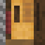
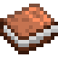
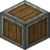
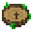
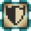
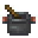
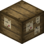

Herkunft und Rolle
Beim ersten Beitritt wählst du beides. Eine Herkunft prägt, wie du spielst, und hat immer einen echten Nachteil. Eine Rolle sagt, was du für den Server tust, und hat nur drei kleine Boni.

Welche passt zu mir?
Neun Herkünfte
Klick eine an. Die Striche zeigen, wie stark sie dein Spiel verändert.
Kronbürger
Die Wahl für alle, die neu sind: nichts zu lernen, nichts zu managen, und der Gedanke der Season als Kraft.
- GemeinsinnRegeneration I, solange ein anderer Spieler im Umkreis von 16 Blöcken ist und du fünf Sekunden nicht gekämpft hast.Belohnt das Zusammenspielen, ohne Alleinspielen schlechter als Vanilla zu machen.
- Zupackende HändeHunger sinkt 15 Prozent langsamer.Klein, immer nützlich, nichts zu lernen.
- HeimwehHunger sinkt 30 Prozent schneller außerhalb der Oberwelt.Auf langen Nether- und End-Reisen spürbar, in der Basis egal.
Mühlenkind
Die zweite Wahl für Neulinge: Wasser ist dein Element, Hitze nicht.
- FlussatemLuft reicht etwa dreimal so lange.Wasserräder, Schleusen und Fundamente im Fluss in Stufe 1.
- StromschwimmerSchwimmt 30 Prozent schneller.
- Nasse HändeKein Abbau-Malus unter Wasser.Kein Extra-Drop, nur Tempo.
- Trockene KehleLangsamkeit I und Hunger I in heißen Biomen (Wüste, Savanne, Badlands, Nether), außer du stehst im Wasser.Der Nether wird ein Ort, an den man mit anderen geht.
Tiefgräber
Der Bergmann. Unter Tage stark, am Tag unter freiem Himmel nicht.
- StollenaugenNachtsicht, mit der Taste für Nachtsicht an und aus.
- HauerhandBaut Spitzhacken-Blöcke 25 Prozent schneller ab.Nur Tempo. Kein Glück, kein Extra-Erz.
- Heimat unter TageEile I in der Mining Dimension.Ein Ort, der am ersten Tag offen ist.
- LichtscheuSchwäche I und Langsamkeit I am Tag unter offenem Himmel. Ein Helm hilft nicht.Der Tiefgräber baut unter einem Dach oder arbeitet nachts.
Messingblut
Der Nether-Pionier für Stufe 2: Lohenstaub wird Messing, und Messing ist das Ziel.
- HitzefestHalber Schaden durch Feuer, Lava und Brennen.Lava ist immer noch tödlich, nur langsamer.
- SchmiedeglutEile I in der Nähe von Öfen, Lohenbrennern und Lagerfeuern.Belohnt die Schmiede-Ecke der Basis.
- RostigLangsamkeit I und Abbaulähmung I im Wasser und im Regen.Regen gibt es überall in der Oberwelt, das merkt man oft.
Aurakind
Naturmagie: heilt im Wald, hat Glück, und kommt mit dem Nether und dem End nicht klar.
- WaldatemHeilt alle vier Sekunden ein halbes Herz in Wald, Taiga und Dschungel.
- KräuterblutImmun gegen Gift.
- Naturglück+1 Glück.Besseres Angeln und bessere Kisten, kein Erz.
- Fern der WurzelnSchwäche I und Abbaulähmung I im Nether und im End.Genau da müssen andere für das Aurakind graben.
Quellgeborene
Die Magierin, der Magier: mehr Mana, weniger Herzen, keine schwere Rüstung.
- Tiefe Quelle+50 Ars-Nouveau-Mana (Basis 100).Mehr Zauber, keine neuen: die Glyphen-Stufen bleiben.
- Zaubersinn+50 Mana bei Iron's Spells (Basis 100).
- Zarter LeibEin Herz weniger.
- Kein Eisen am LeibKeine Rüstung aus Eisen, Gold, Diamant oder Netherit.Magierroben und Leder.
Runenträger
Der Tank für die Bosskämpfe: Afrits, der Drache, Gaia, der Chaoswächter.
- Runenhaut+2 Rüstung.
- Bannzeichen30 Prozent weniger Schaden durch Magie.
- Standfest+0,25 Rückstoßwiderstand.Hält die Linie.
- Schwere Zeichen10 Prozent langsamer.Auf jedem Weg spürbar.
Sternensplitter
Die Beweglichste von allen, mit dem größten Preis.
- SternensprungTeleportiert dich auf den Block, den du ansiehst, bis 16 Blöcke weit. Zehn Sekunden Abklingzeit, kostet zwei Hunger. Nicht durch Wände.Eine Enderperle mit kurzer Reichweite. Beweglichkeit ohne Fliegen.
- SternenstaubHalber Fallschaden.
- EndblickEndermen werden nicht wütend, wenn du sie ansiehst.Für das End in Stufe 4.
- SplitterleibZwei Herzen weniger.Der größte Abzug aller Herkünfte.
Chaosgezeichnete
Die Kämpferin, der Kämpfer: mehr Schaden, Heilung im Kampf, und danach lange nichts.
- Chaosfunke+2 Angriffsschaden.
- Zehrendes ChaosHeilt ein Herz bei jedem Kill.
- UnstetNatürliche Regeneration nur halb so schnell.Zwischen den Kämpfen helfen Tränke oder ein Kronbürger in der Nähe.
Sieben Rollen
Ohne Nachteil und klein. Jede zeigt auf einen Teil der Obeliskenziele.

IngenieurDie Technik-SäuleStartet mit einem Schraubenschlüssel. +1 Zahnrad pro von Hand gebautem Zahnrad. Halber Schaden durch Create-Maschinen.
ArkanistDie Magie-Säule+1 Mana-Regeneration pro Sekunde bei Ars Nouveau. Tränke wirken 25 Prozent länger. Startet mit einem Novizen-Zauberbuch.
Baumeister20 000 Bruchstein und die StadtBaut Stein 30 Prozent schneller ab. +1,5 Blöcke Reichweite. 40 Prozent weniger Fallschaden.
EntdeckerBiome, Strukturen, was der Stadt fehltHunger sinkt 20 Prozent langsamer. 5 Prozent schneller zu Fuß. Startet mit einem Nature's Compass.
HüterAfrits, der Drache, Gaia, der Chaoswächter+2 Rüstung. +1 Herz. Untote, die du triffst, bekommen vier Sekunden Schwäche.
VersorgerDreißig Spieler sieben Wochen lang satt30 Prozent Chance auf Zwillinge beim Züchten. Selbst gekochtes Essen sättigt mehr. Immun gegen Hunger und Übelkeit.
HändlerHandel und Transport zwischen den BasenEtwa 15 Prozent günstigere Dorfbewohner. +1 Glück. Neun Extra-Slots im Inventar, offen mit der Fähigkeiten-Taste, fallen beim Tod.Grundsätze
- Wenige, gute Wahlmöglichkeiten. Jede sagt im ersten Satz, woher sie in Kronwerke kommt.
- Jede Herkunft hat einen Nachteil, den man jede Session merkt, keine Fußnote.
- Nichts überspringt die Stufen. Kein Fliegen, kein Extra-Erz, kein Bonus auf Ziel-Items. Kräfte machen dich schneller oder zäher bei dem, was du ohnehin darfst.
- Herkünfte prägen, wie du spielst. Rollen prägen, was du für den Server tust.
- Zwei Herkünfte für Neulinge: Kronbürger und Mühlenkind.
- Niemand kommt allein voran. Das Aurakind braucht Freunde im Nether, der Tiefgräber meidet den Tag, der Kronbürger heilt am besten in Gesellschaft.
Beim Wechseln hilft der Orb of Origin. Die Kräfte werden nach der Beta im Dezember noch nachgestellt.